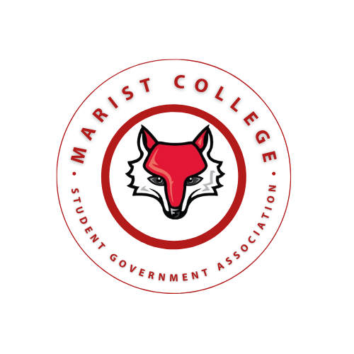
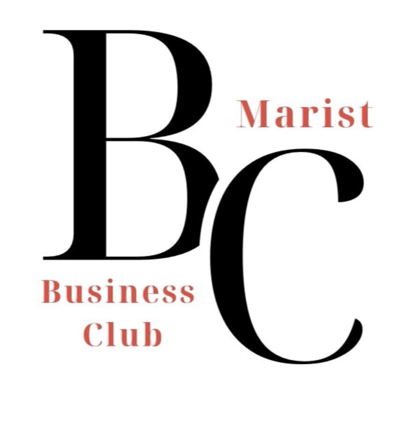
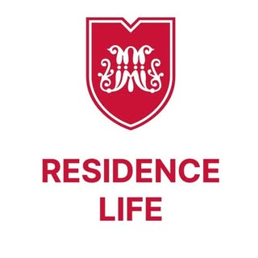

Student Government Association (SGA)
Class of 2026 Vice PresidentI maintain official records, meeting minutes, and governance documentation for the Class of 2026, ensuring accuracy and accountability across all student government operations. I serve as a primary communication bridge between SGA leadership and the student body, reinforcing transparency and trust through regular updates and outreach. I also assist in planning class-wide projects and events that enhance the senior student experience.

The Business Club
TreasurerI manage budgets, monitor expenses, and review reimbursements to ensure financial accuracy and compliance across all club operations. I allocate funding based on club priorities and risk considerations for expenses including catering, club merchandise, and advertising materials, balancing resource constraints with strategic initiatives. This role has strengthened my financial management skills and ability to make data-driven decisions while supporting the organization's growth and member engagement.
The Business Club
Vice PresidentI helped plan and execute professional and networking events while supporting strategic decision-making for the organization. I led rebranding initiatives that included developing a new marketing strategy, partnering with other School of Management clubs, and designing a whole new logo to modernize the club's image. Through speaker outreach, I increased member engagement and established valuable connections with business professionals. This role developed my event management capabilities and strengthened my ability to collaborate with executive board members on initiatives that enhanced the club's visibility and value to members.

Residence Hall Council (RHC)
PresidentI served as the primary representative for my dormitory in the Residence Hall Association (RHA), advocating for resident needs and concerns at the university level. I collaborated with board members to plan and execute community events including watch parties, raffles, and art-based events that brought residents together and fostered a sense of belonging. I also managed council operations and facilitated weekly meetings to address resident feedback and coordinate programming. This role developed my leadership abilities, conflict resolution skills, and capacity to build community among diverse groups.